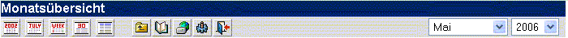

| Die Kalender Toolbar arbeitet ähnlich wie die Haupt Toolbar, bietet aber die Möglichkeit den Kalender zu bearbeiten.
Die Kalender Toolbar:
Hier finden Sie mehr Informationen über den Kalender

Nehmen Sie diese Tabelle als Referenz für die Buttons:
| Button/Icon |
Name |
Auswirkung |
|
| Jahresübersicht | Zeigt die aktuelle Jahresübersicht an |
 | Monatsübersicht | Zeigt die aktuelle Jahresübersicht an |
 | Wochenübersicht | Zeigt die aktuelle Jahresübersicht an |
|
| Tagesübersicht | Zeigt die aktuelle Jahresübersicht an |
 | Listenansicht | Zeigt die aktuelle Jahresübersicht an |
 | Zurück zum Posteingang | Zurück zum Posteingang |
 | Adressbuch | Öffnet das Adressbuch zum Bearbeiten |
 | WebDisk | Öffnet die WebDisk zum Bearbeiten |
 | Benutzer-Einstellungen | Erlaubt die persönlichen Einstellungen zu ändern. |
 | Logout | Abmelden von OpenWebMail |
Sie können auch das Jahr ändern, das angezeigt werden soll. Einfach
auf das Jahr klicken und das entsprechende Jahr auswählen. Monate,
Tage, Wochen und Einträge werden entsprechend angepasst.
. |